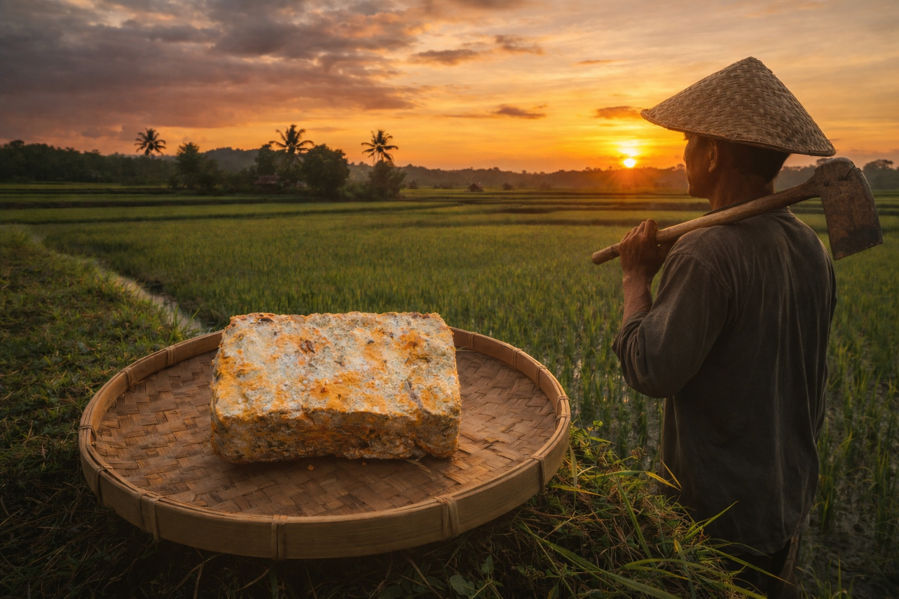

Oncom atau Dage (bahasa Sunda: , . Oncom) khas Sunda asal Indonesia. Makanan ini adalah produk fermentasi yang dilakukan oleh beberapa jenis kapang, mirip dengan pengolahan terhadap tempe. Perbedaannya adalah bahwa pada oncom hasil olahan dinyatakan siap diperdagangkan setelah kapang menghasilkan spora, sementara pada tempe hasil olahan diperdagangkan sebelum kapang menghasilkan spora (baru dalam tahap hifa).
Ada dua jenis utama oncom: oncom merah dan oncom hitam. Oncom merah fermentasi oleh kapang oncom Neurospora sitophila sedangkan oncom hitam fermentasi oleh kapang tempe yaitu Rhizopus oligosporus
Learn More!
Pada projek kali ini, saya membuat oncom. Salah satu makanan tradisional Indonesia dengan fermentasi ragi yang berbeda untuk membandingkan warna, aroma dan tekstur kedua oncom. Saya menggunakan ragi oncom dan Ragi tempe, kedua ragi ini saya campurkan dengan ampas tahu lalu aya fermentasikan selama 2 hari. Selama 2 hari, saya mengamati perkembangan kedua oncom dengan campuran ragi berbeda. Terdapat beberapa perbedaan signifikan yang tentunya dipengaruhi beberapa faktor seperti : Faktor kebersihan, Faktor kualitas ragi, dan faktor cara fermentasi.
Ragi oncom adalah mikroorganisme yang digunakan sebagai starter dalam proses fermentasi untuk membuat oncom. Ragi ini biasanya mengandung kapang seperti Neurospora sitophila atau Neurospora intermedia yang berperan dalam menguraikan zat-zat kompleks pada bahan baku, seperti ampas tahu atau bungkil kacang tanah, menjadi senyawa yang lebih sederhana.Ragi tempe adalah mikroorganisme yang digunakan sebagai starter dalam proses fermentasi tempe. Ragi ini umumnya mengandung kapang Rhizopus oligosporus yang berfungsi mengikat biji kedelai dan menguraikan senyawa kompleks menjadi lebih sederhana. Proses fermentasi ini membuat kedelai menjadi lebih mudah dicerna, memiliki tekstur padat, serta menghasilkan aroma khas tempe. Proses fermentasi oleh ragi oncom tidak hanya membantu meningkatkan nilai gizi bahan tersebut, tetapi juga menghasilkan warna khas oranye kemerahan, aroma yang khas, serta tekstur yang lebih padat pada oncom. Oleh karena itu, penggunaan ragi oncom yang tepat sangat berpengaruh terhadap kualitas akhir oncom yang dihasilkan.
Kiranya penelitian ini dapat berjalan lancar :)
9C/25